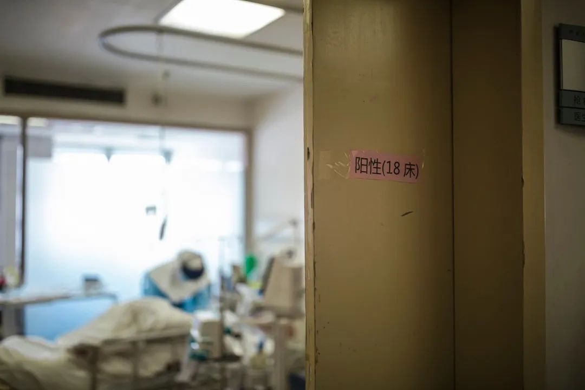
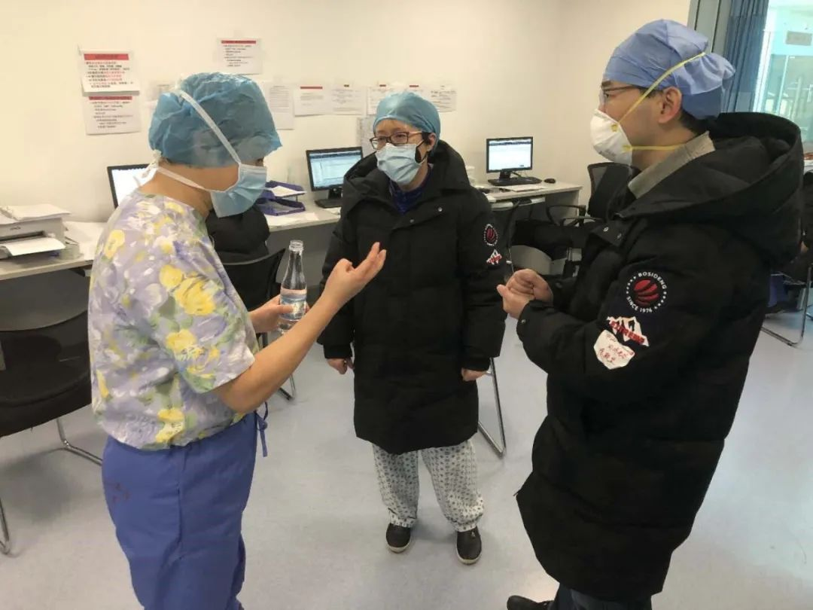
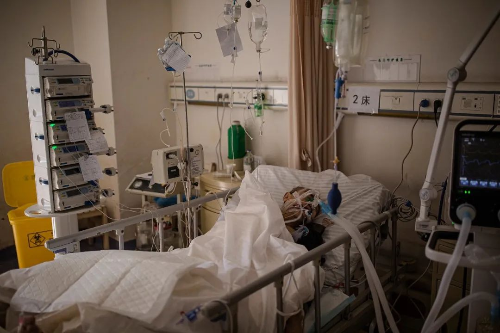
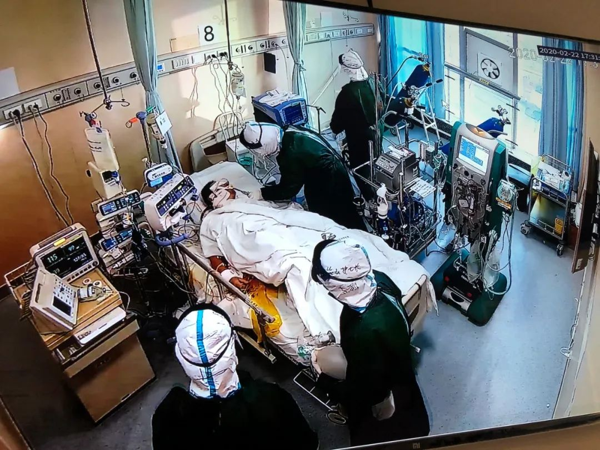
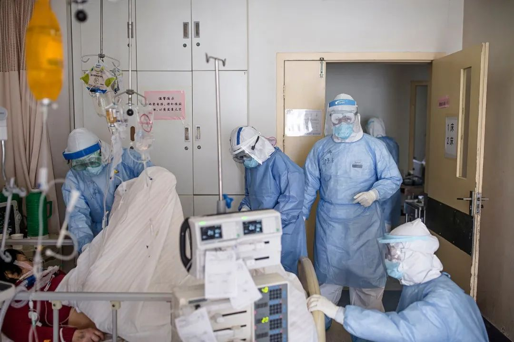

感染、病危、治愈、重返一线，一位武汉ICU主任的38天生死劫
原文链接 备份链接 致敬所有奋战在一线的医护人员。 武汉的一月，气温总在10度以下，阴雨天气占了大半。2020年1月14日那天，不仅有雨，还有三到四级的风。武汉协和东西湖医院重症监护室（ICU）主任袁海涛和他的同事，推着一个因病毒性肺炎插 …

「应收尽收」的当下，武汉最惊心动魄的战场已经转移到了重症病房。2月22日下午5点，华中科技大学同济医学院附属同济医院光谷院区的ICU病区里，医生办公室的大屏幕正监控着每张病床的情况。11床和19床的患者刚刚去世，护士在一根一根拔掉他们身上的管子。
几位医生站在屏幕前，看着房间里的一切，很沮丧。其中一位患者本不在危重名单内，上午评估时情况都还不错，下午便急转直下。一位医生说，「每个人都拼尽了全力想保（病人的）命，但是病情变化太快了，没有给你一点准备的机会。」到了晚上，又传来消息，18床的患者也去世了。一天之内，该院区ICU死亡3人。
同济医院光谷院区一共有17支医疗队，管理全院828张重症床位。其中上海华山医院医疗队，整编制接管了重症监护室，收的都是其他病区转运的危重症病人。意外常常会发生，在他们的死亡病例里，有些病人是死在厕所里，有些吃饭吃到一半就去世了，根本来不及抢救。
从2月11日开始，每天下午3点，死亡讨论会在报告厅准时召开，17支队伍派出代表，讨论疑难与死亡病例。一位医生在会上提到自己的患者在吃饭时突然去世，表达了痛苦和困惑：「怎么会这么快，这么猛？给人感觉一根稻草就把这个骆驼给压死了。」
同济光谷院区ICU的负责人李圣青，是华山医院呼吸科主任，经历过SARS，但此次新冠疫情的惨烈程度仍在她的经验之外。她把自己的工作总结为「和死神抢病人」。在ICU的病床上，会看到有的病人已经上了几台机器，「那么小小的身躯被一群机器围住，很多病人都是这样，完全被机器围绕了……我是觉得真是太惨烈，如果你在我们ICU长期干，你会知道简直太惨烈了，太惨烈了。」
在经历了几位病人的去世之后，李圣青一直在呼吁关口前移，提前介入，提前治疗。目前同济医院光谷院区的死亡率，已经低于大多数医院。
以下是《人物》记者与李圣青的对话。
文*******｜***********罗婷
编辑*******｜***********糖槭
《人物》：你接管ICU已经十多天了，刚开始时是什么感受？
李圣青 ：当初决定要来，就是想，我是搞呼吸危重症的，武汉前线这么多同道倒下，病人死去，我坐不住，心里着急，所以就来了。我经历过SARS，知道该怎么做。但到了之后，让我崩溃的一点是我们所谓的重症ICU，还只有床和床头柜（注：该院区的ICU是临时改造的），但要收最重的病人。所以想尽一切办法，先把心电监护仪、呼吸机都搜罗过来。到现在，呼吸机基本配置够了，有将近30台有创呼吸机。
实际上，我们这儿的病人都要上有创（呼吸机）的，因为在普通病区，吸氧和无创他都给病人上过了，如果还搞不定，到这儿来一定是要插管的。我们一共30张床，最多的时候有27个病人插管。
《人物》：你反复提到「关口前移」，是在什么状况下得到的这个结论？
李圣青 ：之所以这么提，是因为有血的教训。应该是四天前吧，我进去查房，所有病人我挨个看了一遍，把呼吸机也调了一遍，病人都很平稳，我还挺开心的，我觉得今天可能不会有病人死了，很高兴地脱了防护服出去，还没走到医生办公室，他们就告诉我，15床成直线了，4床也成直线了，这简直是太让我吃惊了，你想想我是什么感受。
那两个病人还都是没上（有创）呼吸机的啊，他们无创吹得好好的，指脉氧也挺好的，大概是92%、93%，因为当时指南（指《新型冠状病毒诊疗方案》）中说，指脉氧维持在88%到93%之间就可以，我想在这个范围嘛，是不是就不需要给他升级插管呢？结果就这样了。所以我下定决心，一定要关口前移。
《人物》：成直线了，是不是就意味着已经是无法抢救了？
李圣青 ：对，就是这样一个结局。指南写的（指脉氧）范围是88%到93%，我就提升到93%以上，如果你达不到93%，我就要给你插管。（甚至）93%、94%我都认为是危险的。在患病后期，病情是呈加速度地发展和恶化。我吃过这么多次亏之后，现在反复强调，关口前移，再前移都没有错，但如果错过了抢救这个病人的机会，真的就是无法挽回了。
《人物》：你说「吃过多次亏」，就是说这样的事情不止发生过一次？
李圣青 ：还有一个病人，我查房的时候发现他在吸氧情况下，95%已经维持不住了，只有93%。马上给他上了无创（呼吸机），上了之后发现改善还是不明显，还是93%，我就跟他的主管医生说，立刻要插管上呼吸机，请了插管队来。但插管队犹豫，说病人坚决不同意。我说你不管他，我跟他家属联系，你先赶紧给我穿了衣服进去。
他们穿衣服进去，我就征得家属同意。等麻醉科医生进去插管的时候，他的指脉氧在无创的情况下只有85%，就半个小时，掉得这么快。紧急插上管之后，现在100%。所以为什么我反复提关口前移的问题，如果等他85%、86%，我们穿好衣服再进去，你就不用进去了，病人已经结束了，真的就是这么快。
 李圣青（左一）在和医护人员讨论病人病情 受访者供图
《人物》：指脉氧85%，这个数据意味着什么？
李圣青 ：意味着严重的呼吸衰竭，马上就要死人了，也意味着你要在三五分钟内给他插管解决。
《人物》：为什么能快到这个程度，就像你说的，争分夺秒。
李圣青 ：这是这个疾病的特点决定的，进展非常迅速，而且是多脏器功能的损害，尤其是危及心脏和肾脏。很多病人都是因为爆发性心肌炎，引起心衰、猝死，发生率非常高。他们呼吸都好好的，是死于心功能衰竭，心跳骤停。
我感觉我每天像打仗一样，就是在和死神在抢病人。他抢我也抢，看谁抢得厉害，看谁手快。我一眨眼他就抢了好几个病人走，我就关口前移，先给你把住，否则根本来不及反应。不是说像普通病房，这个病人还挺好的，再等等，等到他不行的时候，你说哎呀要插管了插管了，穿了半个小时防护服进来，不用进来，不用穿了。
《人物》：上次死亡讨论会上一位医生说，ICU大多数的新冠病人不是死在床上，而是在厕所，还有在吃饭时突然去世。据说还有病人是在无创转有创的那几分钟里去世的，为什么会这样？
李圣青 ：其实病人已经处于氧耗竭状态，没有任何的氧储备。只要离开了呼吸支持，不能够维持重要脏器的氧供应，很快就会死掉。有时候对这个疾病还是轻敌了，这样的病人要尽快上呼吸机、插管。有时候晚了一分钟，就再没机会了。
（注：会上医生们的讨论显示，并非每个死亡病例，医生们都知道死因。因为很难做到在移动危重症病人去做CT和心脏超声的同时，还给他们供氧，所以一些医生表示，有时不能及时发现病人身体的细微变化。也因为很多病人都有基础性疾病，他们最终是否死于原有的其他疾病，也需要讨论。李圣青的做法是每隔五到十分钟记录病人的相关数据，比如心率、血压、呼吸、氧饱和等等，看看病人是死于心衰，还是呼衰，还是其他问题。）
《人物》：如果是这样的情况，关口前移，具体可以有哪些措施？
李圣青 ：如果危及肾脏的话，那我们可以肾替代治疗，这倒没关系。危及心脏呢，我现在想到的提前介入的方法就是先上IABP（主动脉内球囊反搏，是机械性辅助循环方法之一，能增加冠状动脉供血、改善心肌功能）。我把这一项介入操作提前，起到一个心脏辅助作用。而事实证明，我们把这个提前确实也降低了死亡率。
如果危及肺脏，就先插管，我们重症ICU很多送进来，氧饱和70%、 80%，这属于抢救的，肯定要插管，不用犹豫。还有一些有疑惑，93%、94%，你觉得还行啊，到底插不插？你再问病人，病人说我不插，你就犹豫。你敢犹豫半个小时，他也就没命了。

一个奄奄一息的重症病人 尹夕远 摄
《人物》：你是呼吸科主任，也经历过SARS，之前见过这样的场景吗？
李圣青 ：没有，虽然我搞呼吸危重症，但也没有见过这么大的场面。我病房里头可能有三四个这样的，最重也就是这样的病例，但没有这么密集，大家都已经累得脚不沾地了。SARS的时候我还在西京医院呼吸科，接触的病人也都是比较轻的。这是我生平第一次，30张床，27个在插管，一个上ECMO，还有5、6个都在做肾替代治疗。我们把所有的手段都上上，硬是拉住病人不让死，现在就是这种情况。
《人物》：我们今天在病房看到，有一位病人上了三台机器，ECMO、肾代替治疗和呼吸机。
李圣青 ：是，那么小小的身躯被一群机器围住，很多病人都是这样，完全被机器围绕了，多惨。你看看就知道，我们做出多大的努力一定要留住他。我是觉得真是太惨烈，如果你在我们ICU长期干，你会知道简直太惨烈了，太惨烈了。
而且你想想，每一个病人死的时候，周围没有任何亲人，都是我们这种陌生人，而且陌生人他连脸都看不到，眼睛还是在护目镜后面。死了之后，他家里人能领到的就是一盒骨灰，是不是太悲惨了。每一个人他活在世界上他都值得被爱，值得被尊重。但是就是因为这个疫情，让武汉很多的新冠肺炎患者在离去的时候毫无尊严，毫无爱的感受。
《人物》：而且从监控里看，病房里每个医护人员的工作量都非常大，一直都没有停。
李圣青 ：因为病情的瞬息万变，我要求医生根据病情的需要，随时查看病人、巡视病房，在里面就是跑个不停。另外每个插管病人配一个护士，护士每30分钟要去巡视一次，不停地巡视，随时发现病情变化，随时调整治疗方案。真的就是像在打仗，所以我跟他们说，我们都是生死之交的战友。
我们现在的床护比1比6，一张床6个护士。平常的ICU 1比3，有时候还可能1比2吧。短期之内这么多的重症病人，而且你工作时间有限，一般就4到6个小时，时间再长，防护作用失去了，这种情况我绝对不可能让大家冒险的。

重症监护室医生办公室的监控屏幕 受访者供图
《人物》：大家也会觉得，这已经是全中国最知道怎么把人留住的一群人了，但是有些死亡还是不可避免。
李圣青 ：对，为什么病人上厕所他就死，为什么他吃口饭他就死，这说明我们对这个疾病的严重性缺少一个预判和预估。关口前移之后，你就可以避免他吃饭死，上厕所死，就是降低死亡率。我现在目的就是降低死亡率，其他先不谈，我先把能用的手段我全部用上，生命支持手段先全支持上，先保住他的命，先让他不死，后面我慢慢再来了。
《人物》：在ICU，还有一小部分病人是清醒的、可以表达的，他们说得最多的是什么？
李圣青 ：其实也没有说什么，我发现病人有一个特点，进了ICU之后，好像他们自己都做好最坏的打算了，这个ICU就是最后一站。能不能出去都是个问号，我们现在总共也就出去了5个人。
《人物》：插管之后，他们是否还有变好的可能性，有多大？
李圣青 ：我们在努力，现在是维持住，不准死，先给你拽住在这儿，这样我们还有机会。之前我们有个相对比较轻的病人，已经拔管了。明天我挑一个病人让他做一下SBT（自主呼吸测试）——就是把呼吸机的各种参数下调，把对他的支持下调，我看他的自主呼吸情况怎么样，如果可以的话，我就给他脱机，但我还给他戴着管子，我随时可以接上，如果他脱机之后他都很好，那我就可以安全地拔。
现在他们得到了足够的呼吸支持，之后就是精细化的重症ICU管理，我希望再通过多学科协作，让我们这些插管的病人能够尽可能脱机，离开ICU，这就是我们下一步努力奋斗的目标。

红十字医院重症监护室，医生在进行抢救工作 尹夕远 摄

长按二维码向我转账
受苹果公司新规定影响，微信 iOS 版的赞赏功能被关闭，可通过二维码转账支持公众号。
原文链接 备份链接 致敬所有奋战在一线的医护人员。 武汉的一月，气温总在10度以下，阴雨天气占了大半。2020年1月14日那天，不仅有雨，还有三到四级的风。武汉协和东西湖医院重症监护室（ICU）主任袁海涛和他的同事，推着一个因病毒性肺炎插 …
原文链接 备份链接 专家门诊 | 合理用药 | 热点聚焦 | 手术日 | 医学史 手术日 手术室里的惊心动魄 按 凶险，无时不刻在发生。。。 1 才从隔离病房出来，24小时，10个人的团队插管20多次，快累趴~~~ 好在总算基本满足了部分 …
原文链接 备份链接 医学史 今天你的行医故事，就是明天的医学史 按 除夕夜，上海首批136名医务人员组成的医疗队紧急驰援武汉。本文作者，上海仁济医院呼吸科主治医师查琼芳从1月24日起就进驻金银潭医院重症病房工作。在完成高强度、忙碌而艰苦的 …
原文链接 备份链接 专家门诊 | 合理用药 | 热点聚焦 | 手术日 | 医学史 专家门诊 给您权威参照 按 本文根据牛牛妈口述整理，让我们一起祈祷奇迹发生。您可以认为有些观点是一家之言危言耸听，没关系，仅供参考。但是，文末四个忠告，务请 …
原文链接 备份链接 从第一例患者入院，金银潭医院已超负荷运转近两个月。医生、护士、病人、志愿者，都在为新冠病毒不眠不休，昼夜奋争。绝望和希望、晦暗和明朗、苦涩和感动，也交织纵横，罩住整座江城。 全文7410字，阅读约需14分钟 点击下图 …